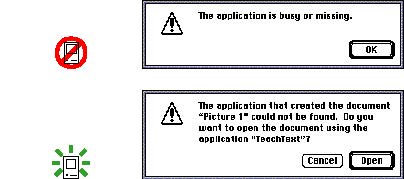

Feedback and DialogKeep users informed about what's happening with your product. Provide feedback as they do tasks and make that feedback as immediate as possible. When a user initiates an action, provide some indicator, visual or auditory(or both), that your application has received the user's input and is operating on it. Provide as much information as possible about how long operations take. When your application can't respond to user input because it's processing a different task, inform the user of what to expect and describe any delays, why they occur, and how long they'll take. Also, tell the user how to get out of the current situation whenever possible. Provide direct, simple feedback that people can understand. Most people would not know what to do if they saw this message "The computer unexpectedly crashed. ID = 13." It would be very helpful if the message spelled out exactly which situation caused the error--for example, not enough memory was available for the computer to complete the task--so that the user could understand how to avoid the situation in the future. Figure 1-2 shows an example of a message that doesn't do anything to help the user and an example of a message that provides useful and helpful information to the user. Figure 1-2 An example of a bad message and an example of a helpful message  |